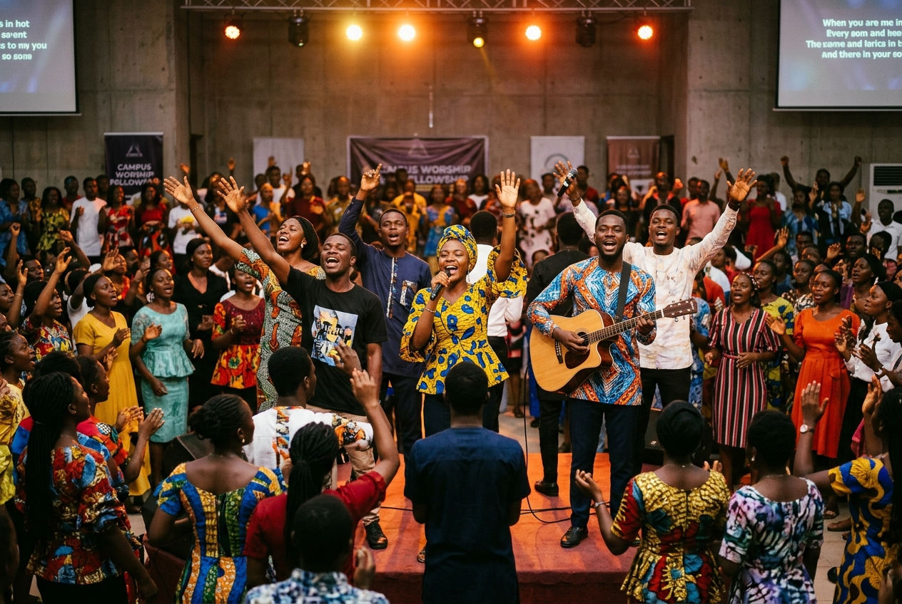
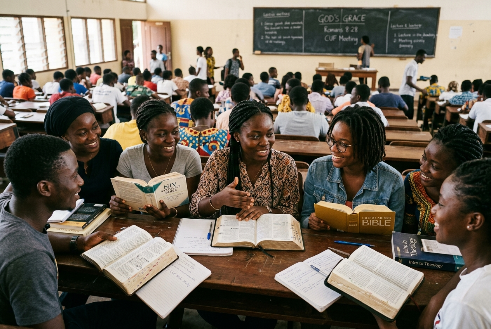
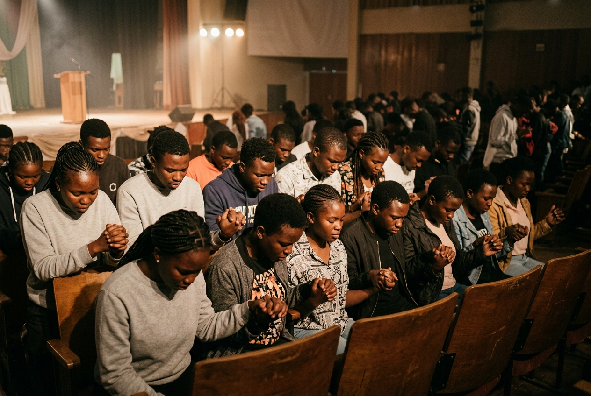

Sunday Service
Every Sunday is a glorious gathering of heartfelt worship in the beauty of holiness, spiritual edification, and life-transforming truth from God's Word.
CACSAOUI. We are a Family of Grace, a people of Love. The Word of God and Prayer.
Welcome to Christ Apostolic Church Students Association Oduduwa University Chapter (CACSA) OUI. We are a Family of Grace, a people of Love the Word of God and Prayer. A student fellowship here in Oduduwa university birthed from the doctrines and values of CAC we are called by God to reveal Christ and manifest the kingdom of God in power and culture in a depraved generation
Worship with us at CACSA OUI. Check out our service times and venues below.

Every Sunday is a glorious gathering of heartfelt worship in the beauty of holiness, spiritual edification, and life-transforming truth from God's Word.

Every Tuesday is an intentional time of deep scripture exposition where we explore and apply the undiluted truth of God's Word, led by the Holy Spirit.

In spiritual unity, we gather to commune deeply with the Father, standing in the gap, engaging spiritual warfare, and experiencing supernatural power.
An energetic community outreach across campus, declaring the saving grace of Christ and manifesting God's kingdom culture in love and power.
A monthly service dedicated to supernatural impartation, prophetic prayer, and the raw manifestation of the Holy Spirit.
An extended retreat atmosphere for intensive prayer, deep doctrine, and fresh personal revival.
Leadership equipping, spiritual re-tooling, and strategic alignment for all fellowship workers and executives.
We are a Family of Grace, a people of Love the Word of God and Prayer. A student fellowship here in Oduduwa university birthed from the doctrines and values of CAC we are called by God to reveal Christ and manifest the kingdom of God in power and culture in a depraved generation